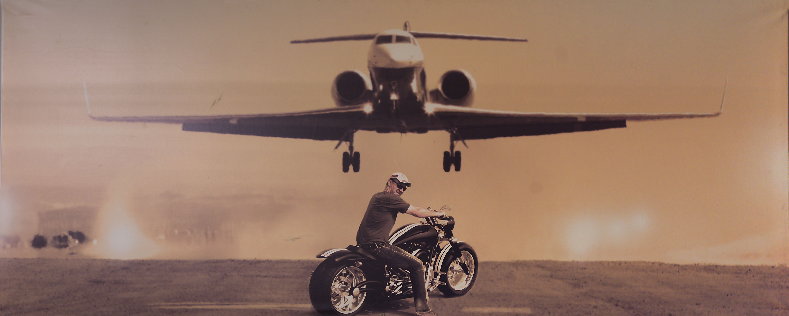
One life, several careers, all of them at full throttle.
One of the world's most experienced Gulfstream captains. A lifelong Porsche racer. The man who took a 911 into the African bush, and came back to tell the story.
Command
One of the most experienced Gulfstream captains in the world.
Peter has spent more than twenty years in the left seat of intercontinental business jets, flying for most of each year outside South Africa: Europe, North America, Asia, and across Africa. Heads of state, Nobel laureates, Hollywood names, sheikhs, oligarchs and global captains of industry have all sat behind him. It is a job that runs on discretion, so he still won't say who he flies today.
He came to it sideways. Peter trained first as a chemical engineer, working in combustion and cryogenics, and took flying lessons on the side. For his final navigation exam he wrote a piece of software, then sold it to other pilots. When a friend who owned an aircraft offered to pay for his type rating, he quit the same day and never went back.
His wall of fame reads like a history syllabus. In 1993, the year before Nelson Mandela became president, Peter was the pilot trusted to fly him through the negotiations that ended apartheid. The photograph from those flights, Mandela with the senior ANC leadership on the apron, still hangs above his desk.
"One day, Mr. Mandela called and asked for this photo, as it was one of the last ones that showed the leadership together. I sent him a copy in a beautiful frame. I understand it ended up in his office."
Twenty years. Every continent he's rated for. Still flying.
A lifetime inside the Porsche world.
Peter has been racing Porsches, and living inside the Porsche community, for essentially his entire adult life. Not as a collector who watches from the paddock fence: as a driver, a club member, and a man who has had many different cars from Zuffenhausen pass through his garage over the decades.
GT-series racing. Hill climbs. Club events. Concours fields. His 911 (964) cabriolet has taken six Concours championships with the Porsche Club of South Africa, the kind of record that only comes from decades of showing up with a car kept in perfect condition. "I'm an absolute technology freak," he says. "It's in my engineer's genes."
Porsche themselves came to him: the factory profiled Peter in Christophorus, their own customer magazine, as a die-hard of the marque. "Porsches, for me, are the best-built sports cars in the world," he told them. "Porsche and my job are closely intertwined."
Six Concours championships. One marque. A whole life.
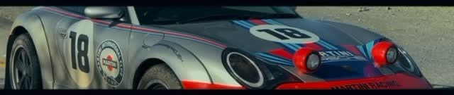
Nine hours, a privateer car, and a podium nobody expected.
Endurance racing is the discipline Peter is proudest of. Through the 2023 Southern African Endurance Series National Championship he shared a Cape Town-entered Dolphin Engineering car with co-drivers Byron Mitchell and Nian du Toit: a privateer Juno SS3 sports-prototype, Nissan V6-powered, running all season against factory-backed Lamborghini and Mercedes-AMG GT3 machinery.
The title fight came down to the Nine-Hours of Kyalami, the series' blue-riband finale, with 44 cars on the grid and the race live on SuperSport. The Dolphin Engineering crew were named among the teams with a real shot at the championship, and they held on to finish the season third in Class A, against a grid built to beat them.
 7:53
7:53
The Safari Projek
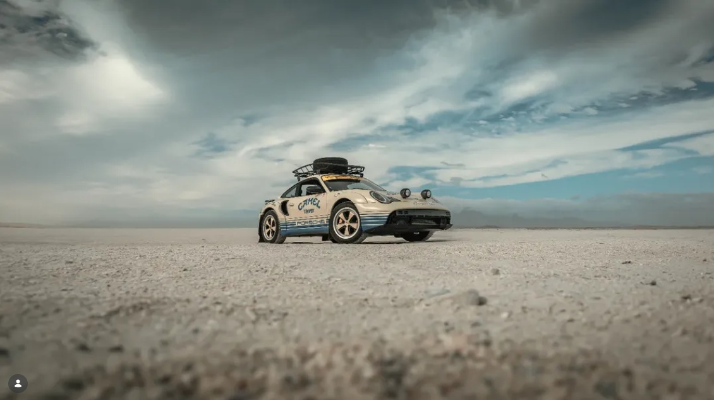
A Porsche, where a Porsche should never go.
Lifted, roof-racked, Falken-shod and built in Camel Trophy-inspired trim: a 911 rebuilt for the African bush, and then driven there. Peter calls it, in his own words, "the beginning of my love affair with my Porsche rally car."
On the 2025 Cape Rally it ran with the Camelthorn Pathfinders, across salt pans, through the aloes, and past the occasional elephant that wandered over to have a look. It is the project where his two worlds, the precision of a Porsche and the wildness of the bush, finally meet in one machine.
The build, on the road
Rack, spare, mud flaps, twin lamps. And then everything the road put in front of it.
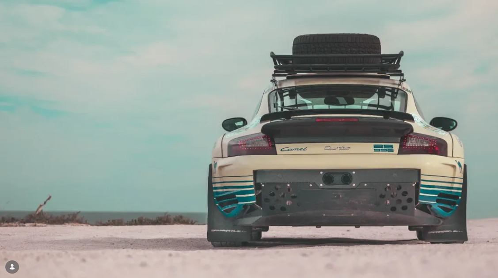
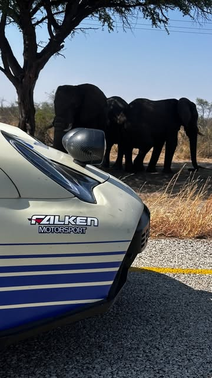
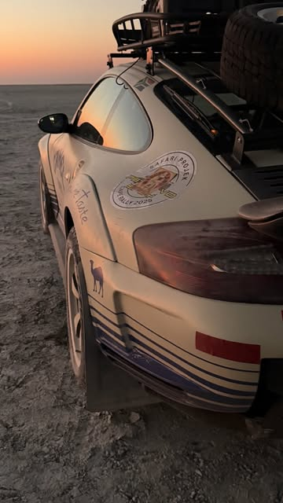
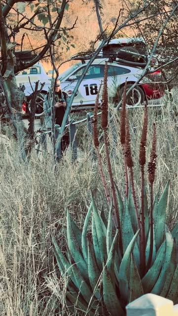
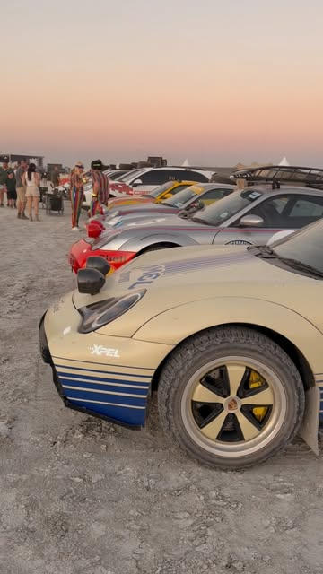
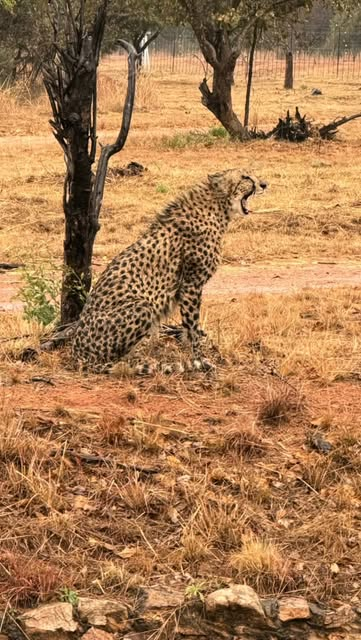
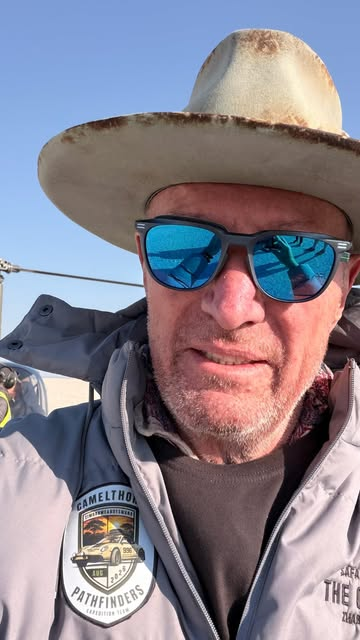
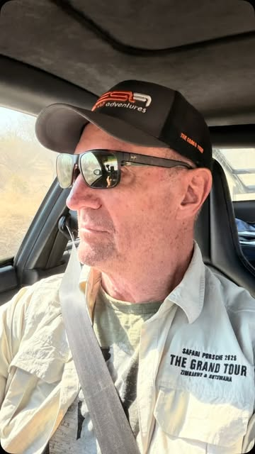
Every story here started as a conversation. Go hear it.
The Peter van der Spuy Podcast puts him across the table from people operating at the same edge: endurance racers, fellow pilots, conservationists, builders, and the occasional legend of South African motorsport. New full episodes land regularly on YouTube and Spotify.
The circle
Guest Nick Adcock broke into racing through one conversation in a shared office. Over 350 races later, he's still competing at Le Mans, and he sat down with Peter to explain how a late start turned into a world-class endurance career. Sarel van der Merwe and Ian Scheckter came in together to relive a rivalry that defined an era of South African racing. Simon Borchett brought the anti-poaching fight from the bush to the studio.
Peter isn't interviewing that world from the outside. He has lived in it for thirty years, and the guests talk to him the way they'd talk to another driver.
 55:18
55:18 48:56
48:56 52:52
52:52 1:40:45
1:40:45 2:26:52
2:26:52 54:03
54:03 2:04:28
2:04:28 1:51:08
1:51:08He's not done yet.